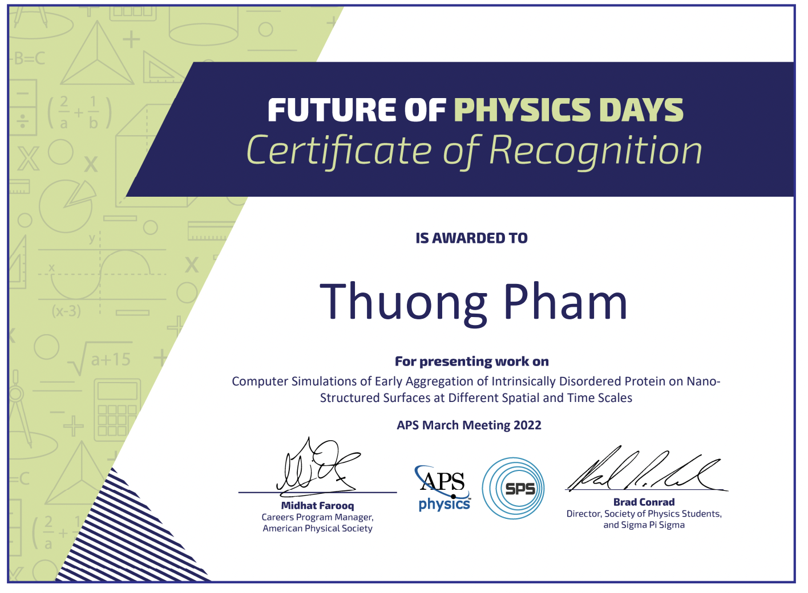

My name is Thuong Pham, and my friends like to call me Lucy.
Nationality: I'm a Vietnamese International Student. I'm from Ho Chi Minh city!
I've been studied 2 years of highschool in Minnesota (U.S.), and 5 years of college in Texas (U.S.).
Favorite Subjects:
All sort of sciences (except organic chemistry orz)
Philosophy is also cool...
Three words that describe me:
Chill~ : a lot of my friends think so, apparently
Fast-learner : I generally love knowing new knowledge
Hard-working : This is not the most unexpected one to me, but I guess I tend to work hard when I commit on something (O.o)?
Favorite animal: an occasional fluctuation between cats and dogs.

5-year education from Trinity University, Texas, USA.
B.S. in Engineering Science and Computer Science
B.S. in Engineering Science:
A full gear of engineering science spectrum, from thermal/fluid to static/dynamic, emphasis on electrical engineering.
B.S. in Computer Science:
All principles of a computer science, with a variety of electives: Compilers, Optimization in AI, Android App Design, Embedded System...
B.A. in Physics, minor in Mathematics
General classical physics and elective in Modern Physics, Astronomy, and Electromagnetic Field.
Programming Languages:
- Frequently used: Python (numpy, pandas, matplotlib, scikit-learn, subprocessing,...), Haskell, Bash/Shell.
- Familiar: C/C++, Scalar, Java, Assembly (MIPS and TExaS), MATLAB, R.
- Experienced: Arduino, Latex, HTML, TCL.
Applications:
- For Simulation/Visualization: Molecular Dynamics Simulation Suite (Gromacs), VMD, Chimera.
- For Engineering Design: Fusion 360, Quartus II, Modelsim Altera, MATLAB's Simulink.
- Offices/Documentations: GitHub, Microsoft Applications, Google Cloud Suite.
Speaking Languages:
English (fluent) and Vietnamese (native)
In pass few years, most of my projects are created and deployed to serve my research works.
All the projects associated with building analysis modules and visualization applications.
The work involved in working with multiple types of Data Structures, Big Data analysis, Feature Extractions,...
The interdisciplinary academic background supported me in applying my computional and problem-solving skills to create solutions for technical issues faced in other science fields, such as what my undergraduate lab is working on - molecular dynamic simulation.
Belows are the projects that I authored during my time as undergraduate researcher.
Publications
- Thuong Pham, Kwan H. Cheng, Exploring the binding kinetics and behaviors of self-aggregated beta-amyloid oligomers to phase-separated lipid rafts with or without ganglioside-clusters, Biophysical Chemistry, 2022, 106874, ISSN 0301-4622, https://doi.org/10.1016/j.bpc.2022.106874
- Kwan Cheng, Thuong Pham, Aakriti Acharya, Amber Lewis, Angela Graf, “Binding and Membrane Damage Behaviors of Self-Aggregated Beta-Amyloid Oligomers on Lipid Raft Surfaces from Microsecond Molecular Dynamics Simulations”, Mendeley Data 2022, V4, doi: 10.17632/s2pg3ntsrz.4
- Kwan Cheng, Angela Graf, Amber Lewis, Thuong Pham, and Aakriti Acharya, “Exploring Membrane Binding Targets of Disordered Human Tau Aggregates on Lipid Rafts Using Multiscale Molecular Dynamics Simulations”, Membranes 2022, 12,1098. https://doi.org/10.3390/membranes12111098
- Amber Lewis, Thuong Pham, Ngoc Nguyen, Angela Graf, and Kwan H. Cheng, “Lipid domain boundary triggers membrane damage and protein folding of human Islet Amyloid Polypeptide in the early pathogenesis of amyloid diseases”, Molecular Biophysics (2022), JBC-D-22-02960 (under peer-review)
Scholarships/Fellowships and Awards

The Welch Research Foundation Undergraduate Fellowship
American Physical Society (APS) Undergraduate Outstanding Oral Presentation Award
Trinity Engineering Department Swalm Endowed Engineering Scholarship
Trinity University Murchison Undergraduate Research Grant
Trinity University International Merit Scholarship